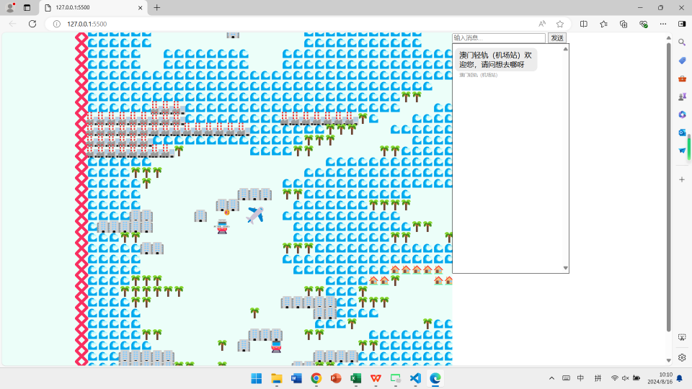

SHM Map Game
🗺️ Guangdong-Hong Kong-Macao Greater Bay Area Interactive Map Game
An interactive map game built with p5.js that allows players to explore, solve puzzles, and embark on
adventures across the Guangdong-Hong Kong-Macao Greater Bay Area.
🌟 Game Features
- 🗺️ Interactive Map Exploration - Freely explore the Guangdong-Hong Kong-Macao Greater
Bay Area
- 🤖 Local AI Chat System - No API required; runs entirely offline
- ✈️ Airport Transport System - Interconnected travel between Shenzhen, Hong Kong, and
Macao airports
- 🚊 Macao Light Rapid Transit (LRT) - Experience traveling via the Macao LRT
- 📝 Traditional & Simplified Chinese Support - Automatically recognizes both Traditional
and Simplified Chinese input
- 🔐 Password Puzzles - Solve password-based puzzles within the scenes
- ⚔️ Combat System - Rescue the occupied "Water Spring"
- 🛠️ Tool Combination Puzzles - Use the correct tools to clear obstacles
🎯 Gameplay
NPC Interaction
- Click on an NPC to start a conversation
- Type messages to communicate with NPCs
- Supports Traditional and Simplified Chinese
Transport System
- Airports: Fly between Shenzhen, Hong Kong, and Macao airports
- Shenzhen Airport → Hong Kong/Macao
- Hong Kong Airport → Shenzhen/Macao
- Macao Airport → Shenzhen/Hong Kong
- Macao LRT: Travel between stations
- Airport Station → Game Area/Leisure Area
- Game Area → Leisure Area/Airport Station
- Leisure Area → Game Area/Airport Station
Tool Combinations
Scenes 3 and 4 require three tools to clear debris:
- High-pressure air gun
- Pipe unblocker (plunger/drain snake)
- Spring auger
🌐 Browser Compatibility
Supports all modern browsers:
- ✅ Chrome (Recommended)
- ✅ Firefox
- ✅ Safari
- ✅ Edge
- ⚠️ Internet Explorer (Not supported)

View Map(In Chinese)